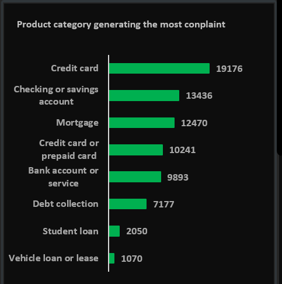
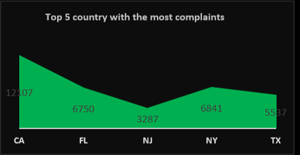
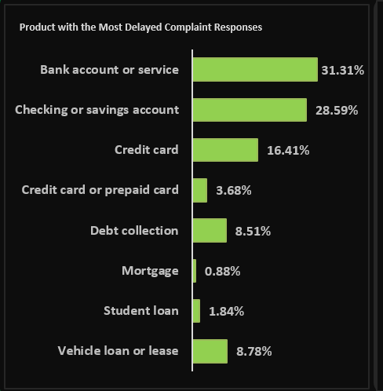
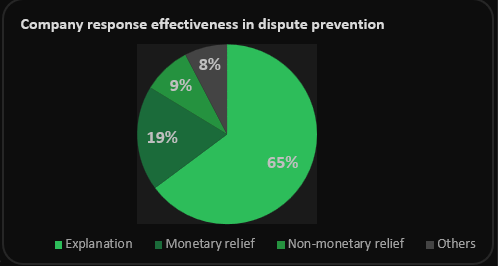
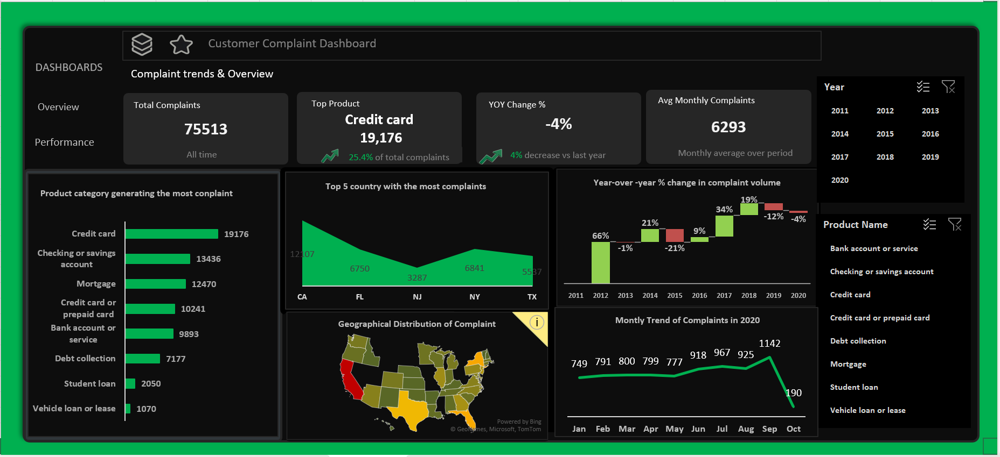
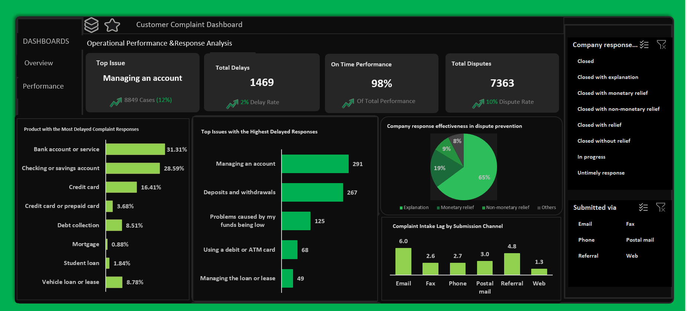

Between 2011 and 2020, US financial institutions received 75,513 consumer complaints — but support teams had no clear picture of which products were causing the most pressure, why responses were getting delayed, or why customers kept disputing even after receiving a response. I analysed the full CFPB complaint database to find out.
Project Overview
Between 2011 and 2020, US financial institutions received 75,513 consumer complaints — but the support teams handling them had no clear picture of where the real pressure was coming from.
Key questions that needed answers: Which products generate the most complaints? Why do some complaints take too long to resolve? And why are customers still disputing their cases even after receiving a response?
Without these answers, resources were being directed based on guesswork — not data.
I analysed the CFPB Consumer Complaint Database using Microsoft Excel. The work involved Pivot Tables, calculated fields, slicers, a map chart, and bar and line charts across two full dashboards.
Dashboard 1 covered overall complaint trends — how complaints changed over time, which products were most complained about, and which states generated the most volume.
Dashboard 2 focused on operational performance — response times, delay causes, dispute rates, and intake channel analysis.
For delay root causes, I applied a 5-Why analysis to trace untimely responses back to their actual origin rather than just describing the surface symptom. Year-over-year comparisons used monthly averages (not raw totals) to account for partial years at either end of the dataset.
Credit cards are the biggest problem — 25.4% of all complaints and 50% of all disputes. The issue isn't the product itself. It's specifically billing disputes and APR/interest rate issues.
Delays are a process failure, not a staffing problem. The root cause is the absence of structured resolution workflows for the most common delay-causing complaint types.
Explanations prevent disputes — but only if they're good enough. 64.8% of complaints closed with explanation should be reducing disputes. The data shows many explanations aren't meeting that bar, especially for credit card cases.
Recommended: structured resolution workflows, scaled support in California, New York, Florida and Texas, and improved explanation quality for credit card responses.
Deep Dive
Each insight below shows exactly what I found in the data, why it matters to the business, and what I recommended to fix it.




The dashboards below are the final deliverables from this project — built to be interactive and usable by someone with no data background.

Dashboard 1 — Complaint Trends & Overview

Dashboard 2 — Operational Performance & Response Analysis
These are the specific actions I recommended based on the data findings.